37 Simple Linear Regression
Every office of the government spends money. An auditor cannot examine every voucher of every office. So we would like to know, before we start, which offices spend more than they should. But what should an office spend? A large office with many staff, a big building and many beneficiaries will naturally spend more than a small one. Comparing raw amounts only tells us which offices are big.
Regression solves this problem. It learns, from all the offices together, how expenditure depends on its drivers, like staff strength, floor area or number of beneficiaries. It then gives an expected expenditure for each office. The difference between what an office actually spent and what was expected is the part its drivers cannot explain. Offices with a large unexplained part are our leads.
As an example, suppose we establish a relationship between the number of employees in an office and its monthly expenditure on salary. We can then predict the salary expenditure of any office if we know its staff strength. How much should an office with 10 employees spend on salary every month? And for the auditor, the more interesting question is the reverse one. Which offices are spending much more than their staff strength explains? We will answer exactly this question in Section 38.9, once we have learnt to use several predictors together.
Formally, regression models are a class of statistical models that let us explore the relationship between a response variable and one or more explanatory variables. Explanatory variables are also called regressors, independent variables or predictors. The response variable is also called the dependent or outcome variable. When the response variable is numeric and its relationship with the predictors is linear, the regression is called linear regression. There are some other assumptions too, which we will discuss later in the chapter.
In this chapter we will learn to
- fit a regression line with one predictor, and read every part of its output,
- check the assumptions behind it, with diagnostic plots,
- predict expected amounts, with a range of likely values, and
- use the residuals to pick the offices which spend more than their staff strength explains.
Chapter 38 then builds on this with several predictors.
37.1 Prerequisites
Besides tidyverse, we will use two more packages in this chapter. broom turns model results into tidy data frames. performance and see draw diagnostic plots.
37.2 Our data, office expenses of block offices
Most of this chapter runs on one dataset. A state has 120 Block Development Offices (BDOs) in seven districts. Besides salaries, each office spends on electricity, telephone, stationery, vehicle hire, camps for beneficiaries and other contingencies. We call this the office expenses of the office. For the financial year 2023-24 we have, for each office,
-
office_idanddistrict, -
terrain, whether the block is in the plains, in the hills or in a tribal area, -
staff, the number of employees in position, -
sanctioned, the number of sanctioned posts, -
area_sqm, the floor area of the office building in square metres, -
population, the population of the block in thousand, -
beneficiaries, the number of beneficiaries of the schemes run by the office, in thousand, and -
office_exp, the office expenses for the year, in ₹ lakh.
Office expenses should grow with staff and with the number of beneficiaries served. Offices in the hills and in tribal areas should spend more on vehicle hire, for the same work. We have also planted two offices whose expenses are inflated by ₹11 lakh each, as if bills for vehicle hire were paid without any vehicle being used. Let us see if regression can find them. As in other chapters, new readers may skip the code which creates the data.
Code to create the block office data
set.seed(4012)
n <- 120
district_terrain <- c(Etawah = "Plain", Sitapur = "Plain", Firozpur = "Plain",
Almora = "Hilly", Chamba = "Hilly",
Bastar = "Tribal", Mayurbhanj = "Tribal")
bdo <- tibble(
office_id = sprintf("BDO-%03d", 1:n),
district = sample(names(district_terrain), n, replace = TRUE,
prob = c(0.17, 0.17, 0.16, 0.13, 0.12, 0.13, 0.12))
) |>
mutate(
terrain = factor(district_terrain[district], levels = c("Plain", "Hilly", "Tribal")),
# offices in the hills and tribal areas are smaller
staff = round(case_when(terrain == "Plain" ~ runif(n, 22, 55),
terrain == "Hilly" ~ runif(n, 12, 38),
TRUE ~ runif(n, 16, 44))),
sanctioned = round(staff / runif(n, 0.80, 0.95)),
# bigger offices have bigger buildings
area_sqm = round(120 + 11 * staff + rnorm(n, 0, 45)),
population = round(runif(n, 60, 200) * if_else(terrain == "Plain", 1.2, 0.8)),
beneficiaries = round(population * runif(n, 0.25, 0.35), 1),
# office expenses in lakh, driven by staff, beneficiaries and terrain
office_exp = round(5 + 0.45 * staff + 0.12 * beneficiaries +
c(Plain = 0, Hilly = 6, Tribal = 3.5)[as.character(terrain)] +
rnorm(n, 0, 1.6), 2)
)
# Planted cases. Vehicle hire of Rs 11 lakh paid without any vehicle used
planted <- c("BDO-027", "BDO-088")
bdo <- bdo |>
mutate(office_exp = if_else(office_id %in% planted, office_exp + 11, office_exp))glimpse(bdo)Rows: 120
Columns: 9
$ office_id <chr> "BDO-001", "BDO-002", "BDO-003", "BDO-004", "BDO-005", "…
$ district <chr> "Mayurbhanj", "Etawah", "Etawah", "Mayurbhanj", "Bastar"…
$ terrain <fct> Tribal, Plain, Plain, Tribal, Tribal, Plain, Hilly, Hill…
$ staff <dbl> 40, 46, 34, 18, 35, 32, 13, 14, 34, 46, 26, 27, 14, 45, …
$ sanctioned <dbl> 45, 56, 42, 22, 38, 39, 16, 17, 40, 50, 27, 29, 17, 54, …
$ area_sqm <dbl> 614, 644, 445, 360, 533, 469, 241, 267, 509, 631, 406, 4…
$ population <dbl> 127, 188, 109, 65, 105, 165, 86, 146, 126, 115, 147, 112…
$ beneficiaries <dbl> 31.8, 59.5, 29.2, 20.6, 31.2, 55.8, 28.7, 43.6, 34.6, 37…
$ office_exp <dbl> 28.02, 29.65, 24.20, 22.24, 28.63, 27.68, 20.53, 22.65, …Together these offices spent ₹31.79 crore on office expenses in the year. The smallest spent ₹16.16 lakh and the largest ₹38.41 lakh.
37.3 Basic concepts
Before we build a regression model, it is always good practice to visualise the data. It helps us see the nature of the relationship between the predictors and the response variable, if there is one. To see the relationship between two numeric variables, we use a scatter plot. See the two examples in Figure 37.1. In the first plot there is a near perfect linear relationship between the sanctioned posts and the staff in position (correlation 0.99). In the second plot there is a clear positive relationship between office expenses and staff (correlation 0.77). The points are much more scattered around the line here.
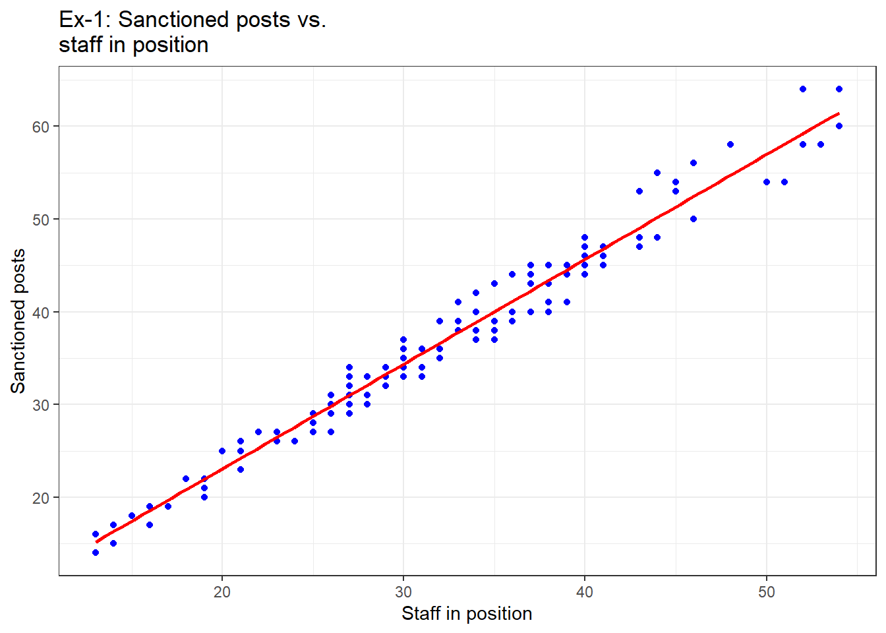
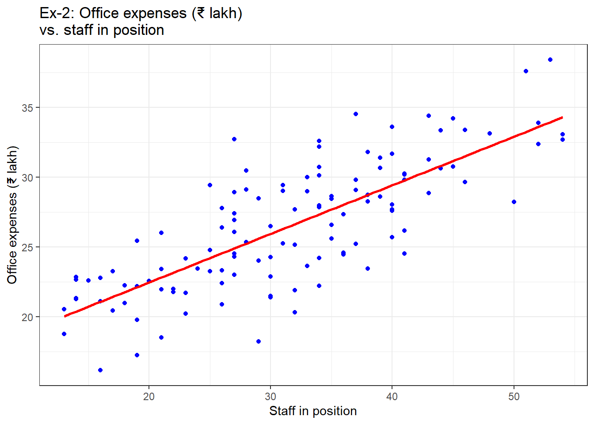
When the outcome variable has a linear relationship with the explanatory variable, the best prediction lies on a straight line. So the maths behind the prediction is finding the equation of that line, Equation 37.1.
\[ y = mx + c \tag{37.1}\]
Where
-
mis the slope of the line -
cis the intercept on the Y-axis (value of \(y\) when \(x\) is0)
Fitting a regression thus means estimating both \(m\) and \(c\). In statistics, these two are usually written as \(\beta_1\) (slope) and \(\beta_0\) (intercept). Those familiar with coordinate geometry know that two points are enough to draw a line. But real data has many points, and they rarely lie on one line. So we can draw many different lines through them. Our goal is to find the best of these lines. But how?
To answer this, note that in practice the points do not lie on the regression line. See the plots in Figure 37.1 again. Hardly any point lies exactly on the line. So for each point there is an actual value of \(y\) and a fitted value, the one on the line. The difference between the two is called the residual. It is the part of \(y\) that the model is not able to explain. If \(\hat{y}\) is the fitted value and \(y\) is the actual value, the residual \(\epsilon\) is
\[ \epsilon = y - \hat{y} \tag{37.2}\]
or, we can say that
\[ y = \beta_0 + \beta_1x + \epsilon \tag{37.3}\]
The best line is the one which leaves the smallest residuals. We cannot simply add up the residuals, because some are positive and some negative, and they cancel out. See Figure 37.2, which shows the first 25 offices. So we either take their absolute values or their squares. The usual method is to minimise the sum of squares of residuals. Squaring gives more weight to large residuals than to small ones. It also gives a simple formula for the best line. That is why this technique is called Ordinary Least Squares or OLS regression.
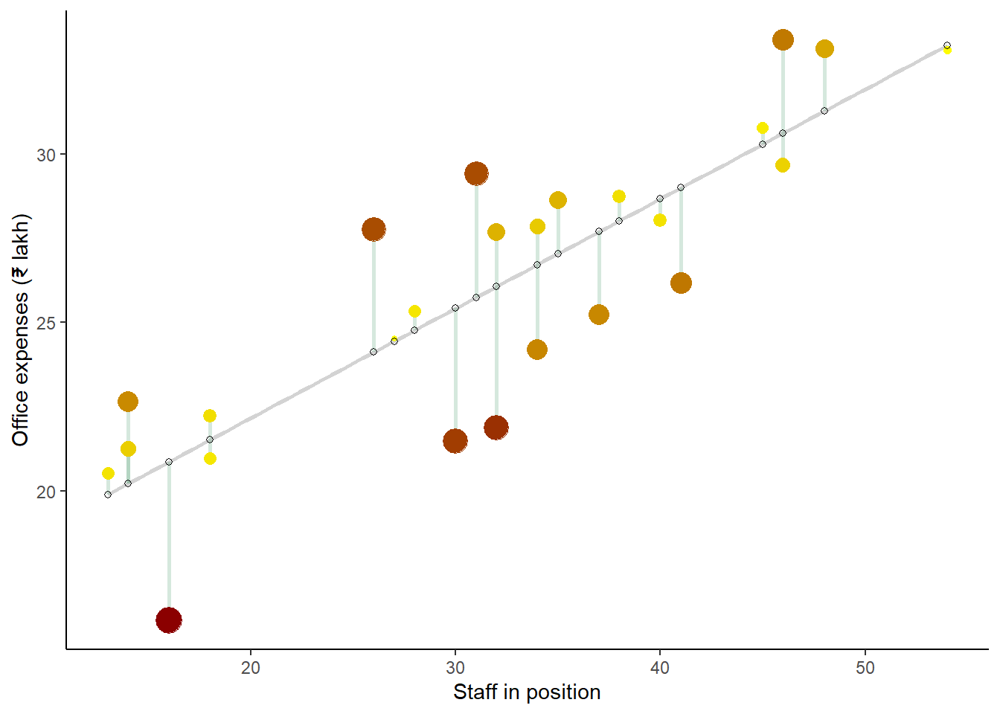
For an auditor, the residual is the most useful number of all. It is the amount which an office spent over and above (or below) what its drivers explain.
37.4 Simple linear regression in R
We do not have to do this minimisation ourselves. Base R has a function lm() which fits the best regression line for a given set of variables. The syntax is simple.
lm(formula, data, ...)where
-
formulais a symbolic description of the model to be fitted. For our example above, we writey ~ x, read as “y is explained by x”. -
datais the data frame which contains the variables.
lm() returns a special object. We can print it directly like other R objects. But it is best printed with the summary() function. Let us first see an example of simple linear regression, which is linear regression with only one independent variable.
Example 1. Let us try to explain the office expenses (office_exp) of our block offices by their staff strength (staff). How much does one more employee add to the yearly office expenses?
As already stated, it is good practice to visualise the data first. So let us make a scatter plot, as in Figure 37.3.
bdo %>%
ggplot(aes(staff, office_exp)) +
# Scatter plot
geom_point() +
# adding a trend line without error bands
geom_smooth(method = 'lm', se=FALSE, formula = "y~x") +
labs(x = "Staff in position", y = "Office expenses (₹ lakh)") +
# Theme Black and White
theme_bw()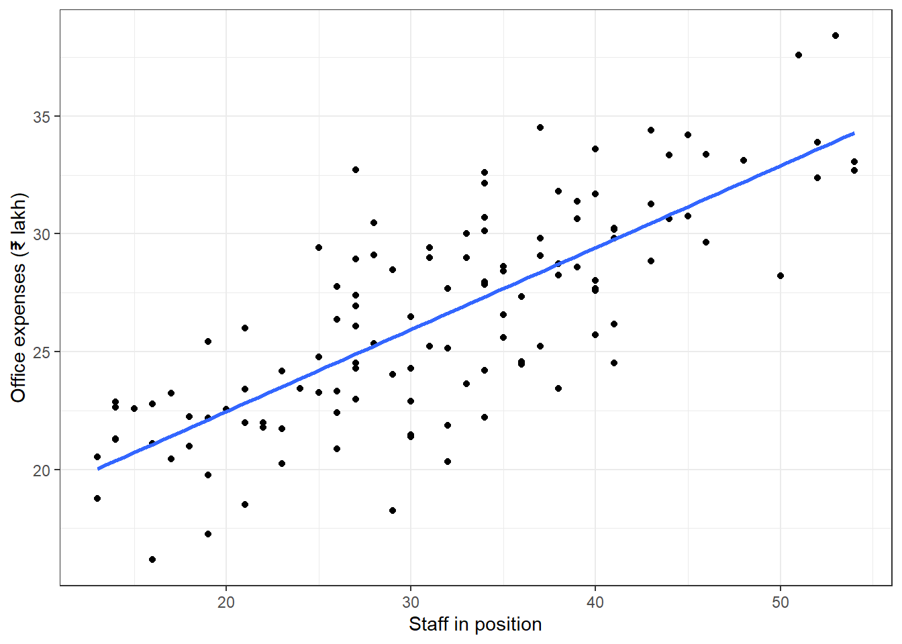
The relationship looks fairly linear (Figure 37.3), so let us build the model.
lin_reg1 <- lm(formula = office_exp ~ staff, data = bdo)
# Let us print the object directly
lin_reg1
Call:
lm(formula = office_exp ~ staff, data = bdo)
Coefficients:
(Intercept) staff
15.5084 0.3477 # Try printing it with summary()
summary(lin_reg1)
Call:
lm(formula = office_exp ~ staff, data = bdo)
Residuals:
Min 1Q Median 3Q Max
-7.352 -1.682 0.070 2.006 7.823
Coefficients:
Estimate Std. Error t value Pr(>|t|)
(Intercept) 15.50844 0.87125 17.80 <2e-16 ***
staff 0.34772 0.02629 13.23 <2e-16 ***
---
Signif. codes: 0 '***' 0.001 '**' 0.01 '*' 0.05 '.' 0.1 ' ' 1
Residual standard error: 2.899 on 118 degrees of freedom
Multiple R-squared: 0.5972, Adjusted R-squared: 0.5938
F-statistic: 175 on 1 and 118 DF, p-value: < 2.2e-16Simply printing the object gives us only the coefficients. Printing it with summary() gives us a lot of other information. But how do we read it? Before that, let us understand a few assumptions which we made, silently, while fitting the line.
37.5 Assumptions of linear regression
Linear regression makes several assumptions about the data.
- Linearity. The relationship between the predictor (\(x\)) and the outcome (\(y\)) is assumed to be linear. If we fit a straight line to a curved relationship, our results will be wrong. See Figure 37.4. The relationship there is actually cubic (green dashed line), and the straight line (red) misses it badly. When we use many predictors, as we will shortly, we also assume that their effects add up.
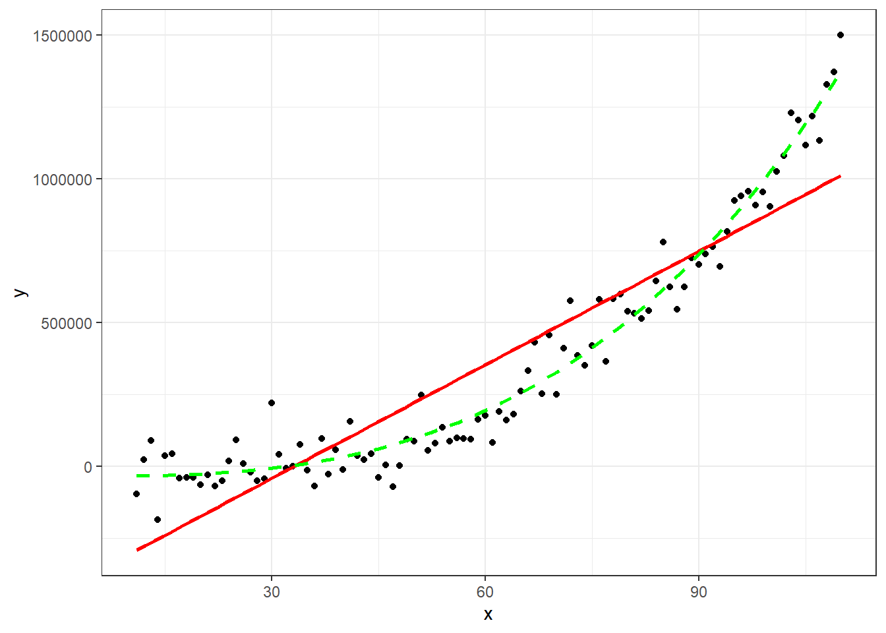
Normality of residuals. The residuals are assumed to be normally distributed with a mean of \(0\). Note that it is the residuals which should be normal, not the \(y\) variable itself. If the model has captured the relationship well, what is left should be random noise. This assumption matters mainly for the p-values and confidence intervals. The line itself can be fitted without it.
Homogeneity of residual variance. The residuals are assumed to have the same spread at all values of \(x\). Statistically this is called homoskedasticity. If the spread changes with \(x\), it is called heteroskedasticity. See Figure 37.5. The residuals in the left plot have equal spread. In the right plot, the spread grows as \(x\) grows, which shows heteroskedasticity clearly. In audit data this is very common. Big offices, big contracts and big claims vary more, in rupees, than small ones.
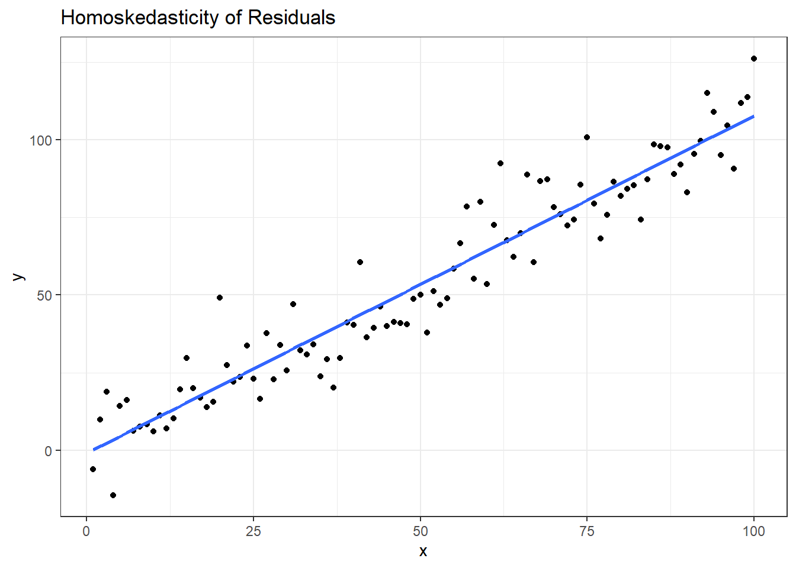
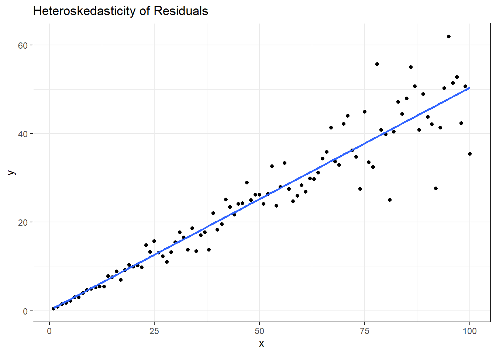
- Independence of residuals. Each observation is assumed to be independent of the others. In our example, the expenses of one block office do not affect the expenses of another. Monthly data of the same office, on the other hand, is usually not independent, because this month’s expenditure is related to last month’s. Such data needs time series methods (Chapter 46).
37.6 Interpreting the output of lm
Let us discuss each section of the summary() output, which we will call the model from here on.
37.6.1 Call
The Call section shows the formula used to fit the model. office_exp is our response variable and staff is the predictor. The data is bdo, all 120 offices.
37.6.2 Residuals
This is the five point summary of the residuals. As discussed, residuals are the actual values minus the fitted values. We can get the same numbers ourselves.
summary(bdo$office_exp - lin_reg1$fitted.values) Min. 1st Qu. Median Mean 3rd Qu. Max.
-7.35244 -1.68198 0.07004 0.00000 2.00575 7.82301 Ideally, the median of the residuals should be close to 0, and the first and third quartiles should be about equally far from it. That tells us the residuals are roughly symmetrical, and the model is not consistently over-predicting or under-predicting. In our example the median is 0.070 lakh, practically zero. The quartiles, -1.68 and 2.01, are nearly balanced too. The histogram in Figure 37.6 shows that the residuals look fairly normal, as we assumed.
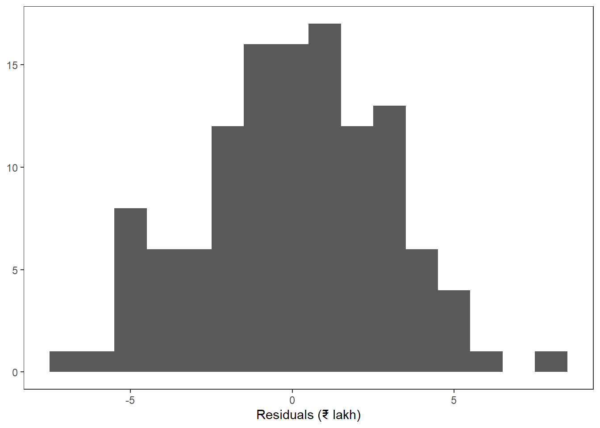
37.6.3 Coefficients
These were the goal of our exercise. There is one coefficient for the predictor (the slope, \(\beta_1\)) and one for the intercept (\(\beta_0\)). A positive slope means \(y\) goes up when \(x\) goes up. A negative slope means \(y\) goes down when \(x\) goes up. In our example,
- when staff strength is
0, the office expenses would be ₹15.51 lakh. We may think of it as the fixed cost of keeping an office open. But no office in our data has fewer than 13 staff. The intercept often has no practical meaning when \(x = 0\) lies far outside the data, so we read it with care. - for every additional employee, the office expenses go up by ₹0.348 lakh, or about ₹34,800, a year on average.
Thus our regression line is
\[ \text{Office expenses} = 15.5084 + 0.3477 \times \text{Staff} \tag{37.4}\]
We fitted the line on the offices of one state in one year. Another year’s data would give slightly different coefficients. So the coefficients are only estimates, and each comes with some uncertainty. We can see a range of likely values for each coefficient, called the confidence interval, using the function confint(). By default, it gives 95% confidence intervals.
confint(lin_reg1) 2.5 % 97.5 %
(Intercept) 13.7831321 17.2337383
staff 0.2956649 0.3997839So each extra employee adds somewhere between ₹0.30 lakh and ₹0.40 lakh a year. The other columns of the coefficients table measure this uncertainty.
- The standard error (
Std. Error) tells us how much the estimate would vary from sample to sample. The confidence intervals above are built from it. - The t value is simply the estimate divided by its standard error. A large t value (positive or negative) means the estimate is large compared to its uncertainty.
- The p-value (
Pr(>|t|)) tests the null hypothesis that the true coefficient is zero, that is, \(x\) has no effect on \(y\). A small p-value, say below 0.05, lets us reject this.
In our example, the p-value of staff is very small, so staff strength clearly affects office expenses. The p-value of the intercept is very small too. We are rarely interested in the intercept, though.
37.6.4 Signif. codes
These are just legends for the stars shown next to each p-value. Notice the three stars next to staff. They mean its p-value is below 0.001, and we can safely reject the null hypothesis that \(\beta_1\) is \(0\). The stars give a quick visual sense of which coefficients matter.
37.6.5 Residual standard error
The residual standard error (RSE) is one of the measures of how well the model fits the data. It is the standard deviation of the residuals, except that we divide by the degrees of freedom instead of \(n\).
\[ RSE = \sqrt{\frac{1}{(n-2)} \sum_{i=1}^n (y_i - \hat{y_i})^2} \tag{37.5}\]
Here the degrees of freedom are \(n-2\), because we estimated two coefficients, one slope and one intercept. With 120 offices, that is 118. We can verify Equation 37.5 by calculation.
The RSE is in the units of \(y\). So we can say that the model’s predictions of office expenses are typically off by about ₹2.90 lakh.
37.6.6 R-Squared, both multiple and adjusted
Multiple R-squared is also called the coefficient of determination. It is the most cited measure of how well a model fits. It tells us what share of the variation in the response variable is explained by the model. In our example about 60% of the variation in office expenses is explained by staff strength. We will discuss it in detail in the next section.
Adjusted R-squared is R-squared with a penalty for the number of predictors in the model. R-squared never goes down when we add a predictor, even a useless one. Adjusted R-squared goes up only if the new predictor improves the model more than would be expected by chance. So it is the better measure to compare models with different numbers of predictors.
37.6.7 F-Statistic and p-value
Why another p-value? Here the null hypothesis is about the whole model. It says that none of the predictors has any relationship with the response variable, or that all slopes are zero. The alternative is that at least one slope is not zero. This is tested with the F-statistic. In our example, the p-value is very small. So we reject the null hypothesis and conclude that there is a relationship between staff and office_exp.
With one predictor, this test gives the same p-value as the t-test of the slope. With many predictors, the F-test is useful because it tests them all together. If we test twenty coefficients one by one, one or two may look significant just by chance.
37.7 Model evaluation metrics
To judge how accurate a model is, we need evaluation metrics. There are several. We will discuss a few of them here.
37.7.1 Mean absolute error (MAE)
As the name suggests, it is the mean of the absolute values of the residuals, Equation 37.6.
\[ {MAE} = \frac{1}{N}\sum_{i = 1}^{N}{\lvert}{y_i - \hat{y_i}}{\rvert} \tag{37.6}\]
It is the average size of the error, in the units of \(y\). A larger value means a less accurate model. On its own, MAE does not tell us much. But when we compare several models on the same data, we can choose the one with the lower MAE.
Once we extract $residuals from the model, calculating it is easy. In our example,
On average, our expected expenses miss the actual expenses by about ₹2.30 lakh.
37.7.2 Mean square error (MSE) and root mean square error (RMSE)
The mean of the squares of the residuals is the mean square error or MSE, Equation 37.7.
\[ {MSE} = \frac{1}{N}\sum_{i = 1}^{N}({y_i - \hat{y_i}})^2 \tag{37.7}\]
MSE punishes large residuals more, by squaring them. Like MAE, we can use it to choose the better of several models. In fact, MSE is exactly what OLS minimises while finding the coefficients.
# Mean Square Error
lin_reg1$residuals^2 |> mean()[1] 8.264789RMSE or root mean square error is the square root of MSE. It brings the error back to the units of \(y\).
\[ {RMSE} = \sqrt{\frac{1}{N}\sum_{i = 1}^{N}({y_i - \hat{y_i}})^2} \tag{37.8}\]
In our example,
Notice that RMSE is very close to the residual standard error we saw earlier. The only difference is that RMSE divides by \(N\), and RSE divides by the degrees of freedom.
37.7.3 Mean absolute percentage error (MAPE)
This metric takes each residual as a percentage of the actual value, Equation 37.9.
\[ {MAPE} = \frac{1}{N}\sum_{i = 1}^{N}{\lvert}\frac{({y_i - \hat{y_i}})}{y_i}\cdot{100}\%{\rvert} \tag{37.9}\]
Since it is a percentage, MAPE does not depend on the scale of the data. We can compare a model on expenses in rupees with a model on expenses in lakh. In our example,
[1] "MAPE is 8.99%"MAPE breaks down when some actual values are zero or close to zero, because we divide by them. A ₹10 error on a ₹20 bill is a 50% error. In audit data, which often has zero or tiny amounts, check for these before using MAPE.
37.7.4 R-squared and adjusted R-squared
As already discussed, R-squared is the coefficient of determination. Its formula is Equation 37.10.
\[ R^2 = 1 - \frac{\sum_{i=1}^{N}(y_i - \hat{y_i})^2}{\sum_{i=1}^{N}(y_i - \bar{y})^2} \tag{37.10}\]
The numerator in the fraction is called \(SSE\) or Sum of Squares of Errors. The denominator is called \(TSS\) or Total Sum of Squares, which measures how much \(y\) varies around its own mean \(\bar{y}\). So \(\frac{SSE}{TSS}\) is the share of variation left unexplained by the model, and \(R^2\) is the share explained. As \(SSE\) gets closer to \(0\), \(R^2\) gets closer to \(1\), a perfect model.
We can verify the formula with the results we have.
[1] 991.7747(TSS <- sum((bdo$office_exp - y_bar)^2))[1] 2462.228(r_sq <- 1 - SSE/TSS)[1] 0.5972044There is one more way to think of \(R^2\). It is simply the square of the correlation between the actual and the fitted values. Let us verify.
(cor(bdo$office_exp, lin_reg1$fitted.values))^2[1] 0.5972044As we keep adding predictors to a model, \(R^2\) keeps going up, even when the new predictors are useless. The model then starts fitting the noise in our sample, which is called over-fitting. Adjusted R-squared corrects for this by penalising the number of predictors, Equation 37.11.
\[ {Adjusted}\;{ R^2} = 1 - \frac{(1-R^2)(N - 1)}{(N - p - 1)} \tag{37.11}\]
where \(p\) is the number of predictors in the model. The summary() function gives both these metrics. We can verify the calculation. Here \(N\) is 120 and \(p\) is 1.
N <- nrow(bdo)
1 - ((1 - r_sq) * (N - 1) / (N - 1 - 1))[1] 0.593790837.8 Plotting the results and their interpretation
We can pass the output of lm() to plot() to see six diagnostic plots. We choose them with the which argument. By default, R shows plots 1, 2, 3 and 5. The six plots are
- Residuals vs. fitted values
- Normal Q-Q
- Scale-Location
- Cook’s distance
- Residuals vs. leverage
- Cook’s distance vs. leverage
Let us see these for our example.
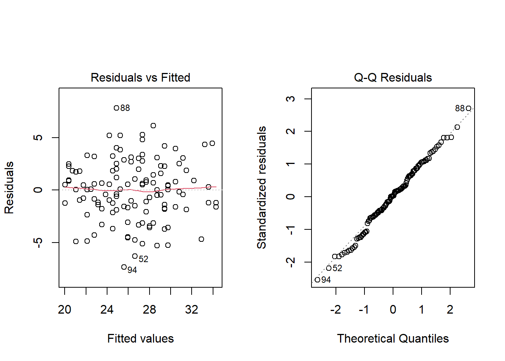
- Residuals vs. fitted values. This plot checks the first assumption, linearity. If the red line across the plot is roughly flat, the relationship is linear and a straight line is a fair choice. If the red line shows a clear curve, a straight line is missing some pattern. In our example the red line wanders a little, but there is no clear curve. So linear regression is appropriate.
- Normal Q-Q. This plot checks whether the residuals are normally distributed. If the points fall roughly along the straight diagonal line, they are. In our example, they follow the line closely.
Notice also that R labels the three most extreme residuals with their row numbers. Here rows 88, 94, 52 are labelled. Row 88 is BDO-088, one of the two offices we planted. Already, with just one predictor, it stands out. We will come back to it in the audit use case at the end of this chapter.
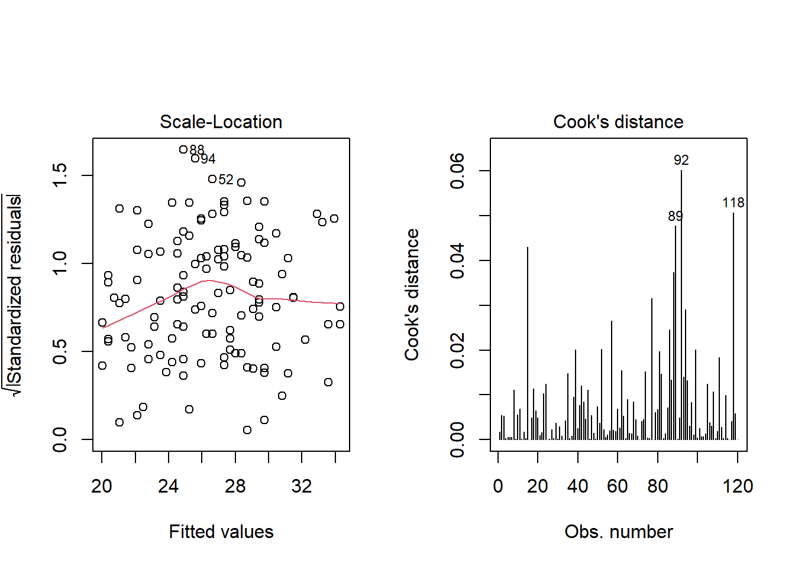
- Scale-Location. This plot checks the assumption of equal variance or homoskedasticity. If the red line is roughly flat and the points are spread evenly around it, the assumption is met. A line going up from left to right is the usual sign of heteroskedasticity. In our example the red line has a gentle hump in the middle, but no steady rise. So the assumption is reasonably met.
- Cook’s distance. An influential point is one which, if removed, would change the regression line noticeably. Not every outlier is influential. A point with a large residual but an ordinary \(x\) value often moves the line very little. A point with an extreme \(x\) value has more power to pull the line towards itself. This power is called leverage. Cook’s distance combines the size of the residual and the leverage into one measure of influence. A common rule of thumb is to look closely at any point with Cook’s distance above 0.5, or well above the others. In our example, row 92 has the largest Cook’s distance, 0.06, which is not alarming.
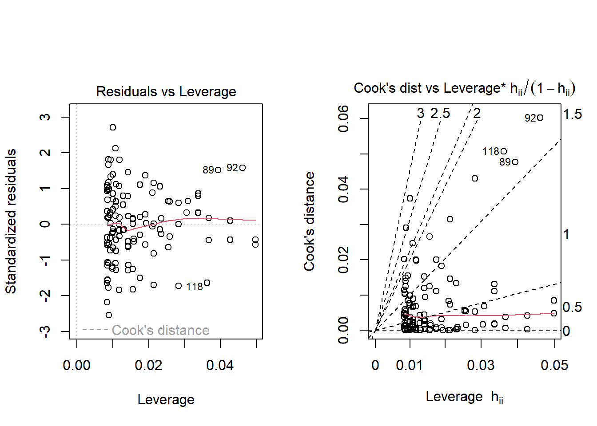
- Residuals vs. leverage. This plot also finds influential points. Points with high leverage lie to the right. Any point outside the dashed red lines of Cook’s distance is influential. In our example, no point is even close to these lines.
- Cook’s distance vs. leverage. This shows the same information in another way. Points in the top right corner, with both high leverage and high Cook’s distance, need attention.
Base R’s plot() can draw all these plots. The package performance draws all the relevant diagnostic plots together, nicely, and writes under each plot what to look for. See Figure 37.10.
check_model(lin_reg1)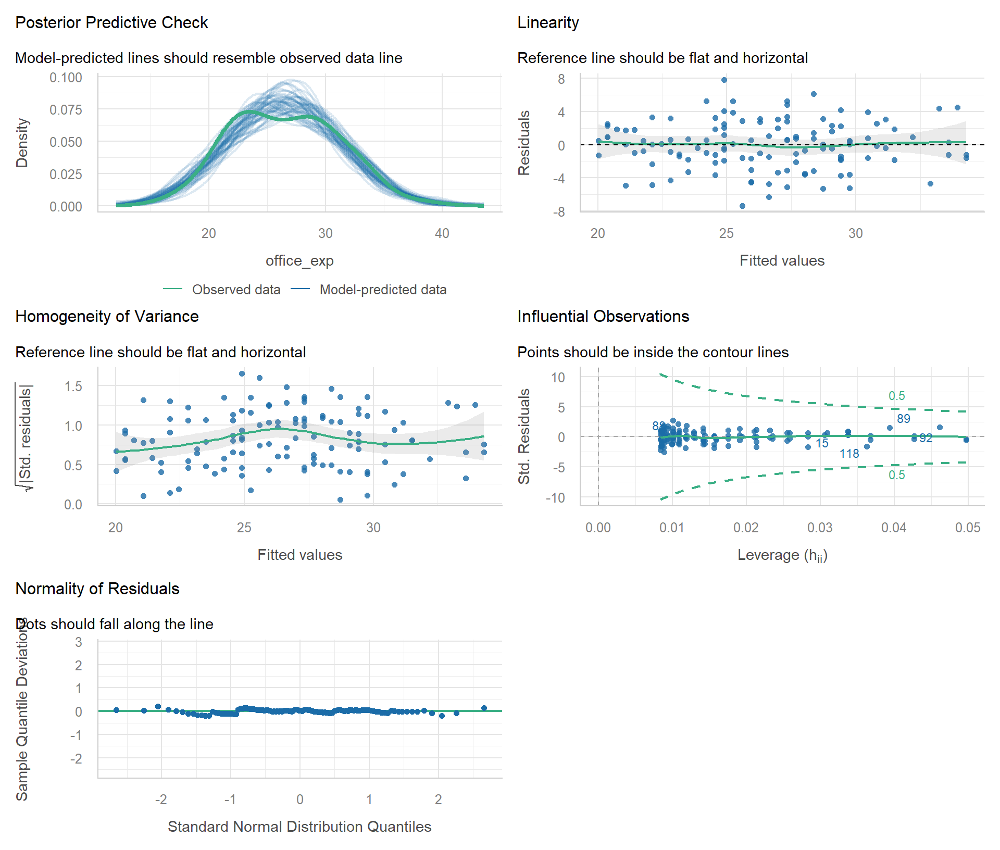
With only one predictor there is no question of multi-collinearity, so check_model() cannot draw that plot and may give a message about it. Multi-collinearity is about one more assumption, which applies only when there are two or more predictors. The predictors should not be strongly related to each other. We will discuss it with multiple linear regression in Chapter 38.
37.9 Using lm for predictions
The output of lm() is actually a list. It contains much more information than we saw above. Let us see what it contains.
names(lin_reg1) |>
as.data.frame() |>
setNames('Objects') Objects
1 coefficients
2 residuals
3 effects
4 rank
5 fitted.values
6 assign
7 qr
8 df.residual
9 xlevels
10 call
11 terms
12 modelWe may extract any of these as needed. For example,
lin_reg1$coefficients(Intercept) staff
15.5084352 0.3477244 The package broom gives all this information as a tidy data frame. Its function augment() gives the fitted value, residual, leverage (.hat), Cook’s distance (.cooksd) and standardised residual (.std.resid) for every row. If we pass the original data as data =, it keeps all the other columns too, like office_id. Let us sort the offices by their standardised residual, which we will explain in Section 37.10.
# A tibble: 6 × 9
office_id terrain staff office_exp .fitted .resid .std.resid .hat .cooksd
<chr> <fct> <dbl> <dbl> <dbl> <dbl> <dbl> <dbl> <dbl>
1 BDO-088 Plain 27 32.7 24.9 7.82 2.71 0.0101 0.0374
2 BDO-086 Hilly 37 34.5 28.4 6.14 2.13 0.0108 0.0246
3 BDO-035 Hilly 34 32.6 27.3 5.27 1.83 0.00882 0.0148
4 BDO-081 Hilly 25 29.4 24.2 5.22 1.81 0.0119 0.0197
5 BDO-062 Hilly 28 30.5 25.2 5.22 1.81 0.00938 0.0155
6 BDO-105 Hilly 34 32.2 27.3 4.83 1.67 0.00882 0.0124The planted office BDO-088 is at the top. It spent ₹7.82 lakh more than offices of its size usually do. But where is the other planted office, BDO-027? It is only at number 35 when all the offices are sorted this way. We will find out why in Section 38.6. Notice also that the other five offices at the top are all in the hills. Our model does not know about terrain yet. We will add it in Chapter 38.
Let us also visualise the predicted values against the actual values and residuals, in Figure 37.11.
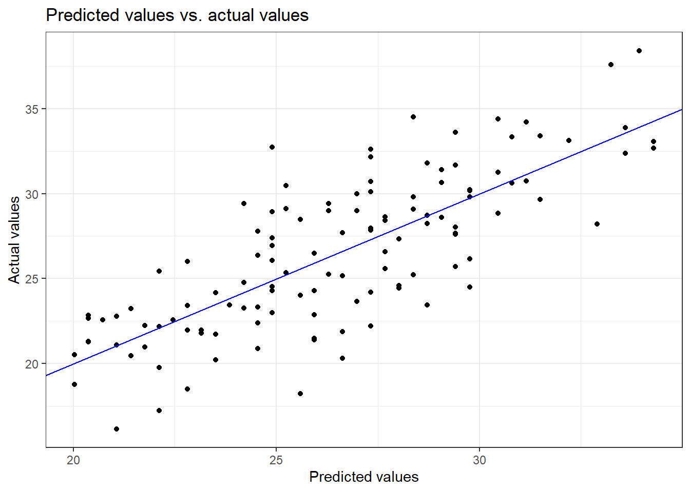
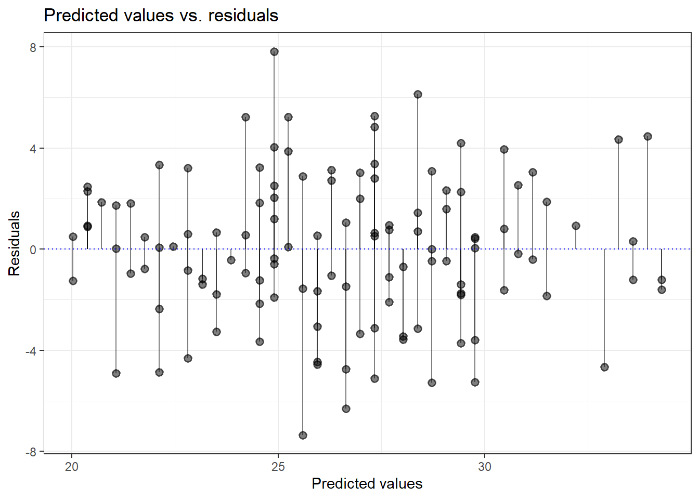
To predict for new data, we use the base R function predict(). The new data must be a data frame with a column of the same name as the predictor. Suppose three new block offices are being opened, with 15, 30 and 45 staff. Let us predict their yearly office expenses, which can help to check the budget estimates they send.
new_vals <- data.frame(staff = c(15, 30, 45))
predict(lin_reg1, new_vals) 1 2 3
20.72430 25.94017 31.15603 A prediction is never exact. We can ask predict() for a prediction interval, the range in which the expenses of a new office are likely to fall, 95 times out of 100.
predict(lin_reg1, new_vals, interval = "prediction") fit lwr upr
1 20.72430 14.89517 26.55343
2 25.94017 20.17468 31.70566
3 31.15603 25.34891 36.96315So an office with 30 staff will most likely spend between about ₹20.2 lakh and ₹31.7 lakh a year. An office of that size which spends well beyond this range deserves a question.
Predict only within the range of the data used to build the model. Our block offices have from 13 to 54 staff. The model knows nothing about an office with 300 staff, and its prediction there may be nonsense. Predicting outside the range is called extrapolation. In audit, a model built on block offices should not be used to judge a district headquarters office.
37.10 Audit use case, offices that spend more than their staff explains
Let us now put this chapter’s tools to one audit question. Which block offices spend much more than their staff strength explains? augment() already gives us the residual of every office. To judge how unusual each residual is, we use the standardised residual (.std.resid). It is the residual divided by its standard error, so all offices are on one scale. Under our assumptions, a value above 2 happens by chance in only about 1 office in 40. Let us keep such offices and show their excess in lakh.
# A tibble: 2 × 8
office_id district terrain staff office_exp .fitted excess .std.resid
<chr> <chr> <fct> <dbl> <dbl> <dbl> <dbl> <dbl>
1 BDO-088 Firozpur Plain 27 32.7 24.9 7.82 2.71
2 BDO-086 Chamba Hilly 37 34.5 28.4 6.14 2.13Only 2 offices cross this line. Together they spent about ₹14.0 lakh more than offices of their size usually do. The first, BDO-088 in Firozpur, is one of the two offices we planted. The second, BDO-086 in Chamba, is in a hilly block.
What would the auditor do with these leads? For BDO-088, we would call for the bills of its largest heads of expense, like vehicle hire, and check them with the log books. For BDO-086, we would first ask whether the terrain itself explains the excess. Vehicle hire costs more in the hills, and our model knows nothing about terrain. We would record the model, the leads and the replies in the working papers.
A model with one driver is only a first screen. This one missed the other planted office, BDO-027, and it points to offices in the hills which may be innocent. Chapter 38 adds beneficiaries and terrain to the model. In Section 38.6 both planted offices then stand out clearly.
37.11 A suggested workflow
For a simple regression in audit, we may follow these steps.
- Understand the drivers. Decide, from knowledge of the business, which variable should explain the amount under audit. Regression only confirms or rejects relationships which make sense.
- Visualise first. Draw a scatter plot to see whether the relationship looks linear, and to spot obvious errors.
-
Fit a simple model with
lm(), and read itssummary(). - Check influence. Look at Cook’s distance and leverage. Investigate and correct data entry errors before going further.
-
Check the assumptions with
plot()orcheck_model(). - Measure the fit. Use R-squared, the residual standard error, MAE or RMSE to judge how far the expected values miss.
-
Flag the residuals. Use
augment()and pick the units with large standardised residuals. Quantify the excess in rupees. If many leads share a feature, like terrain, add it to the model first (Chapter 38). - Verify with records. Examine the documents of the flagged units before drawing any conclusion.
A regression model shows association, not cause. A large residual means only that a unit does not fit the pattern of the others. It is a lead, not a finding. A model with one predictor knows only one driver. It may miss an irregular unit and point to an innocent one. Always examine the records before reporting.
37.12 Where next
Chapter 38 adds more predictors to the model, including categories like terrain and interactions. It finds both planted block offices, and it looks for ghost employees in the salary bills of sub-divisional offices.
37.13 Summary of functions used
| Function | Package | What it does |
|---|---|---|
lm() |
base R (stats) | Fits a linear regression model |
summary() |
base R | Shows coefficients, p-values, R-squared and F-test of a model |
coef(), confint()
|
base R (stats) | Gives the coefficients and their confidence intervals |
residuals(), fitted(), sigma()
|
base R (stats) | Gives the residuals, fitted values and residual standard error |
predict() |
base R (stats) | Predicts for new data, optionally with prediction intervals |
plot() on a model |
base R | Draws the six diagnostic plots, chosen with which
|
cooks.distance(), rstandard()
|
base R (stats) | Gives Cook’s distance and standardised residuals |
names() |
base R | Lists the parts of a model object |
augment() |
broom | Gives fitted values, residuals, leverage and Cook’s distance as a data frame |
check_model() |
performance | Draws all diagnostic plots together, with guidance |
glimpse() |
dplyr | Shows the columns of a data frame, with their types and first values |